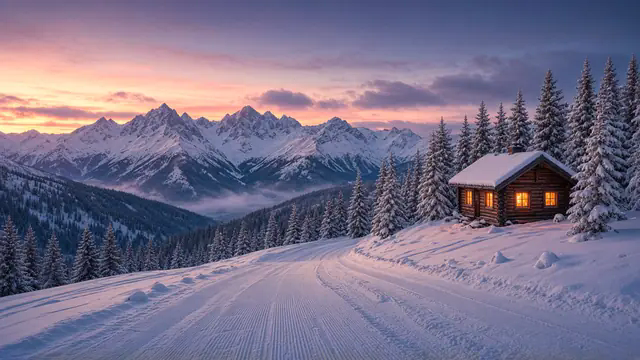

Åpent hverdager 06.45–17.15
Sæterlia ligger ved alpinanlegget.
Friluftsavdelingen til Bårdshaugen Barnehage. [Fylles inn: hvem som går der og hvordan barna kommer seg dit]
Ring Sæterlia: 410 79 426
Illustrasjon. Bildet er ikke fra barnehagen.
Om friluftsavdelingen
Bårdshaugen er en foreldreeid barnehage midt på Skei i Surnadal. Vi har 46 barn mellom 1 og 5 år og er åpne hverdager 06.45–17.15. De to andre avdelingene, Revehiet og Bjørnehiet, holder til i huset på Skei.
Store deler av året er det mørkt ute når vi åpner klokka 06.45. Revehiet tar imot de minste barna. Bjørnehiet har de eldste, de siste årene før skolen. Sæterlia er friluftsavdelingen, og den holder til ved alpinanlegget. Barnehagen har 15 faste ansatte. Klokka 17.15 stenger vi.